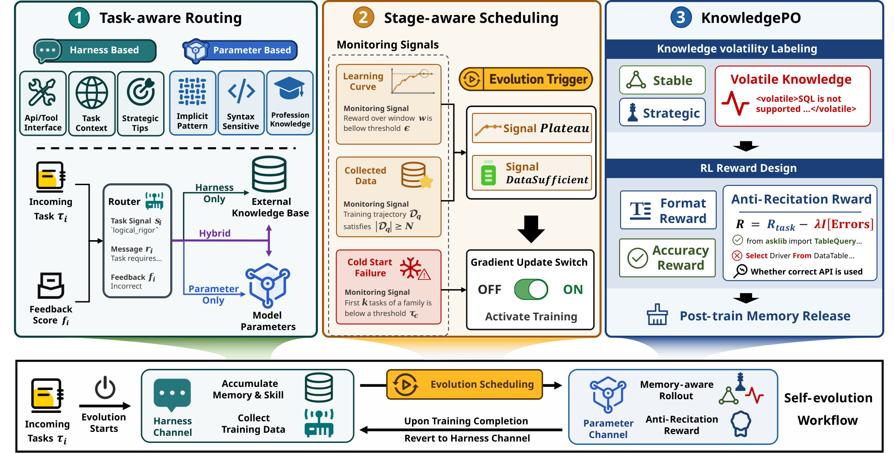
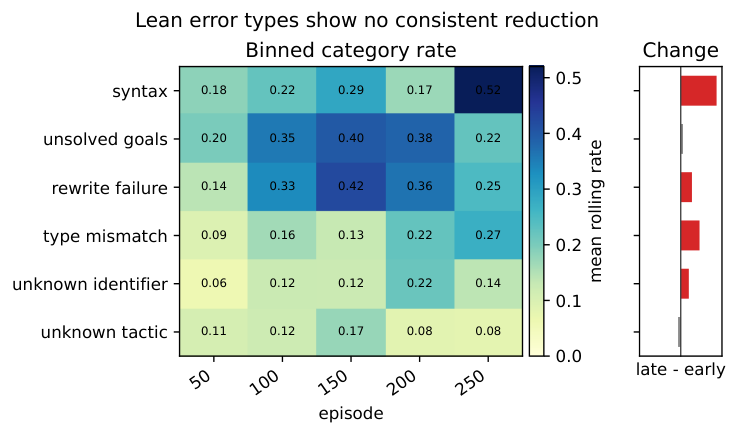

Uses Lean 4 theorem proving on MiniF2F as one of five evaluation tasks, analyzing Lean compiler error types under memory-based agent self-evolution.
Abstract
Large language model agents increasingly operate in dynamic environments where tool interfaces, APIs, and user requirements change after deployment. Existing self-evolution methods mainly follow two paradigms: harness-based approaches, which externalize feedback into editable memories or skills for rapid adaptation, and parameter-based approaches, which internalize experience into model parameters for deeper capability improvement. However, using either mechanism alone creates a trade-off between flexibility and performance. This paper asks how an agent can coordinate both channels to achieve robust self-evolution. We present COVE, a unified agent self-evolution framework that combines harness-based and parameter-based learning through task-aware routing, stage-aware scheduling, and knowledge optimization. Through this design, COVE treats self-evolution not as indiscriminate accumulation of experience, but as a coordinated process that matches tasks and knowledge types to appropriate learning mechanisms. Experiments across multiple task categories show that COVE outperforms single-channel evolution strategies, demonstrating more robust and efficient improvement under changing environments.
Problem
LLM agents deployed in changing environments must keep improving. Existing self-evolution methods either store feedback in external memories or skills, which is flexible but shallow, or update model weights, which goes deeper but is costly and brittle when interfaces change.
Approach
COVE combines harness-based (memory/skill) and parameter-based (fine-tuning) self-evolution. It uses a task-aware router, a stage-aware scheduler that triggers parametric updates on plateau, data sufficiency, or cold-start failure, and a knowledge optimization step that keeps volatile knowledge in the harness. Diagnostic analyses on Lean 4 MiniF2F theorem proving show that memory accumulation alone does not reduce Lean compiler errors. Lean is therefore treated as a cold-start domain needing an initial parametric update.

Figure 5. Overview of COVE. Given task feedback, the task-aware router selects an evolution channel, the stage-aware scheduler determines when to invoke harness-side or parameter-side updates, and KnowledgePO coordinates knowledge transfer between external memories and model parameters by preserving volatile knowledge in the harness.

Figure 3. Lean error types under harness evolution, showing no consistent reduction across episodes.
Results
With Qwen3-8B, COVE reaches 7.0% success on Lean4 MiniF2F, against 0.0 for the base model and Evo-Memory and 6.2 for parametric-only. It also matches or exceeds single-channel variants on APPS, TableQA, HotpotQA and MATH, while cutting training tokens by roughly 73-90% relative to parametric-only.